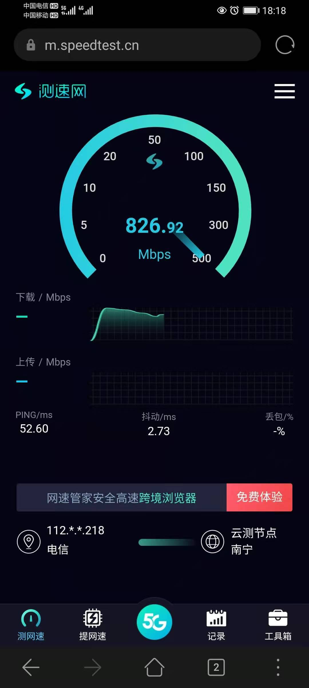

MyHomeKit
Network
中国电信1 200M 光纤宽带 有公网 IP ，支持 IPv6 ，问了客服上下行速率表，省略了 50M 以下的
Table 1: 上下行速率 下行带宽 上行带宽 50M 10M 100M 20M 200M/300M 30M 500M 30M 1000M 30M 这也太不对等了，看到上行都没有升级 1000M 的欲望了。升级 300M 要到营业厅去办理。
- 中国电信 200M 光纤宽带 跨域宽带，使用广东电信 39 元档的畅享卡（15 GB + 100 分钟通话）办理的。
中国电信 30G/月 通用流量 2020 年 10 月时在学校测的最高速度，测一次速下载加上传差不多 2G 流量。在深圳测的就没超过 300M。
 - 华为云2 ECS 1M BGP 用作管理，业务用其他的 IP 地址和带宽。
zhang.local
自建的网络域。互联网出口是电信 200M，但网速有惊喜，有公网 IP ，VPN 借助 GNB 穿透公网。
算下来这些设备一天要一度电，0.588 一度，一个月电力成本 18 元左右，同配置下比云服务划算。
omen.zhang.local
目前借助 HP Omen 作为服务器，Windows 11 系统，使用 vbox 跑了 3 个虚拟机（2 个 linux，1 个 Windows）。目前 512GB 970 Pro + 1T HDD 空间有点不够，打算换下 970 Pro 到国产的 2 TB 存储，机械硬盘也换大一点的，但不确定这个二手购入的 17 年的笔记本是否支持。
HP Omen 装 Windows ，因为还有一点游戏需求，因为 Start 云游戏收费了，每周只免费 2 小时，薅不了想薅的羊毛，所以宿主机上有游戏，方便过年的时候玩玩。此外天翼网盘备份文件很方便，通常是 RDP 上加密文件然后上传。
虚拟机：
- ubuntu.zhang.local | Ubuntu 22.04 LTS | 用于跑 docker, nodejs, python 服务，主要给自己提供服务。
- kali.zhang.local | Kali Linux 22.4 | 用于渗透测试，部分测试环境的搭建，安全从业人员必备。
- win-work.zhang.local | Windows 11 Work | 搭建的专用的工作环境，不想弄乱自己的 Mac ，下班后用 RDP 工作。
平时功耗 15W 左右，最高有 180W，实测跑半年下来电费花了 45 元左右，每月 7.5 元的样子。
ubuntu.zhang.local
docker 其实用的是 podman。
localhost 端口分配
| port | service/application | caption |
|---|---|---|
| 1050 | Anki(python, 27701) | |
| 1060 | Fava(python, 5000) | |
| 1080 | Clash(go, 7890) | |
| 1081 | Clash API(go, 9090) |
| port | service/application | caption |
|---|---|---|
| 1120 | Vaultwarden HTTP(80) | |
| 1121 | Vaultwarden Websocket(3120) | |
| 1130 | Memos HTTP(5230) | |
| 1140 | Snapdrop HTTP(80) |
ct-ftth.zhang.local
电信定制的华为光猫，17 年的了，应该不是租用的，好像当时是说预存话费送的，还行，有千兆口，配套的机顶盒也有 4K 输出。 宽带目前是桥接模式。iTV 没法改桥接，固件版本高，获取不了超级密码，问了电信的也不给。
额定功耗 12W 。
hw-ax3.zhang.local
华为 AX3 路由，使用一切正常，家里设备少，带宽需求大的设备都是有线连接。迁移到二楼后穿墙模式一二三楼的信号都不错，单层面积 120m2 左右。路由拨号，除 WAN 口外三个口分别是 HP Omen、监控、书房。
额定功耗 12W 。
m5-1f/m5-2f.zhang.local
两台水星 SG 105 Pro 5 口网管交换机，一楼一台，二楼一台。因为一楼到二楼只预留了一根六类网线，但光猫在一楼，决定将路由器迁到二楼后 IPTV/iTV 和监控不能用，买了带 VLAN 功能的交换机实现单线复用。Web 管理，使用 802.1q VLAN 加 PID 实现 VLAN 分割，记得关闭 IGMP 监听，不然 IPTV 的直播会是看几十秒就卡住报错无网络。
额定功耗 3 W ，两台 6 W。 说道这，有必要说下基层电信工作人员能力不行，那天去车站接人，让电信偷家了，直接把六类线拆成两根五类线在用，还推销了个 TP 路由器，收了两百多，我没问具体价钱，家里人让弄的，我太气人了，我都说我回家弄。我直接打电话让他回来退货和返工，不然投诉，后面我自己返工的，电话里还说什么必须要这样，一根线实现不了我的需求，我真的服了，都不懂就乱搞，强烈建议电信招工时至少要求考过中级网络工程师的证书吧！而且给的路由器淘宝 120 左右，卖 200，况且我家有一个好好的华为 AX3 和两个百兆路由器，非要买他推销的弄上去？我大一就在学校网管中心兼职，大二开始参与管理校园网的部分交换机，非光纤连接的汇聚层到接入层，在交换机上配置 VLAN，我配过好多次，怎么就不能单线实现？真的无知，家里人拦着不让投诉，不然真的打 10000 投诉。太恶心了，改动我的网络规划我都不会这么生气，为什么要推销路由器？第一我有性能更好的路由器不用；第二多收差价。坑外行人的钱真有一套。
zhang.mobile
hw-4g-cpe.zhang.mobile
华为移动路由 3。 本来使用华为天极通套餐的，但是华为和联通合作的这个网速真的不咋样，流量倒是挺多的，2000 GB 每月只用 5% ，于是到期后不续费了，换成电信的 200M 宽带，唯一的不足是虽是千兆但只支持 2.4GHz 频段的 WiFi。
zhang.tenant
ct-ftth.zhang.tenant
电信租用代管的中兴光猫，电信的异地 200M 带宽，支持 WiFi 6，性能够用就没有接路由器了。虽然获取了临时的超级密码，但没有太大的用处，不知道什么会被改。
借助公网 v4 地址可以转发到 v6 地址实现远程访问。
额定功耗 12W 。
zhang.vpn
Virtual Private Network with GNB3 五个节点。
1001|10.1.0.1|255.255.255.0 1002|10.1.0.2|255.255.255.0 1003|10.1.0.3|255.255.255.0 1004|10.1.0.4|255.255.255.0 1005|10.1.0.5|255.255.255.0
Device
- 🌐Router
- 360 P2 2017.07
- Huawei WiFi AX3 2021.01
- Huawei 4G CPE 3 2022.04
- 🔄Switch
- Mercury SG 105 Pro x 2 2023.01
- 💻Laptop
- Microsoft Surface New Pro m3 4G+128G 2018.03
- Apple MacBook Air M1 8G+256G 2020.12
- HP Omen 15.6 i7-7700K 32G+512G+1T 2022.01
- 📱Phone
- Honor X10 6G+64G+128G 2020.07
- 🎧Headphone
- Huawei Freebuds Pro 2020.10
- Bose QuietComfort 45 2023.02
- ⌚Watch
- Huawei Watch GT 2022PE 2022.01
Honor X10
虽然升级了 Harmony 3.0，感觉就是 2.0 换个版本号，一些系统应用可以通过 adb 删除，删除自带的音乐、视频播放器、浏览器以及智慧能力相关的软件。智慧助手感觉没有太大的用处，场景自动执行功能还是太少了，而且冷不丁的震动真吓人，为减少点空间占用和电量消耗就卸载了。
部分低版本应用：
- 天翼云盘 v7.1.0 from APKPure； 没有开屏广告及其它乱七八糟的没用功能，但有更新提示的弹窗。占用空间不到 50M，可以扫码登录，最新版只能登录当前数据网络下的手机而不是登录 APP 的那个帐号。
- 高德地图 v10.25.0.1305 from APKPure； 安装包和国内下载的相比少 10M。没有开屏广告、更新提示、打车、车辆管理等，导航及路况均正常，可以与车机互联，占用空间 300 M 左右。